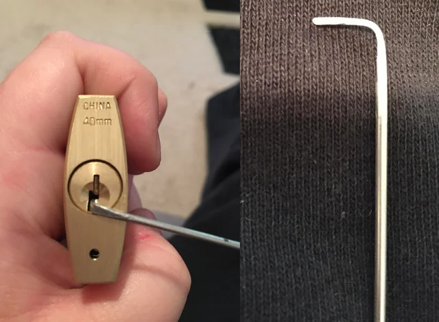
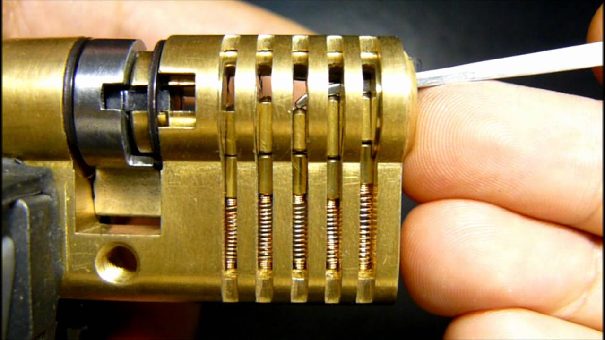

Detaljno objašnjenje otvaranja cilindra
Otvaranje cilindričnih brava bez originalnog ključa, u stručnim krugovima poznato kao lockpicking, predstavlja preciznu kombinaciju primijenjene mehanike, taktilnog osjećaja i strpljenja. Ova vještina se oslanja na iskorišćavanje sitnih proizvodnih nesavršenstava koja postoje u svakoj bravi, bez obzira na to koliko je kvalitetno izrađena. Da bi se cilindar uspješno otvorio, potrebno je razumjeti interakciju između unutrašnjih komponenti i primijeniti tačno odmjerenu silu pomoću specijalizovanih alata. Cijeli proces se svodi na manuelno simuliranje onoga što originalni ključ radi automatski – postavljanje svih klinova u liniju koja omogućava rotaciju mehanizma.
Uloga napinjača i stvaranje obrtnog momenta

Prvi i najvažniji korak u procesu otvaranja jeste pravilno postavljanje napinjača (engl. tension wrench). Ovaj alat, najčešće u obliku slova „L“, umeće se u gornji ili donji dio otvora za ključ sa ciljem da se na jezgro cilindra primijeni blagi, konstantan pritisak u smjeru u kojem bi se ključ inače okretao. Svrha ovog koraka nije nasilno okretanje brave, već stvaranje minimalnog obrtnog momenta. Zbog mikroskopskih odstupanja u poravnanju rupa unutar cilindra, ovaj pritisak uzrokuje da se jedan od klinova zaglavi između jezgra i kućišta jače od ostalih. Bez ovog konstantnog napona, klinovi bi se nakon podizanja jednostavno vratili u početni položaj pod uticajem sopstvenih opruga.Manipulacija klinovima i lociranje linije razdvajanja

Zadržavanje pozicije i finalno otključavanje
Nakon što je prvi klin uspješno postavljen, proces se ponavlja. Zbog blagog pomaka jezgra, pritisak se sada prenosi na sljedeći klin koji je fabrički najbliži sledećoj tački kočenja. Koristeći prefinjen osjećaj u prstima, rukovalac alatom prepoznaje klikove i promjene u otporu mehanizma, sistematski pronalazeći i podižući preostale klinove. Kada se i posljednji klin postavi tačno na liniju razdvajanja, nestaje i posljednja mehanička prepreka koja je blokirala unutrašnjost brave. Napinjač tada nailazi na potpuni gubitak otpora, jezgro cilindra se slobodno okreće u krugu, a jezičak brave se pomjera, čime se proces otvaranja uspješno završava.
Nemojte ni da pokušavate da otvorite tuđa vrata barem bez dozvoljenja!
Pogledajte sliku sa objašnjenjima!